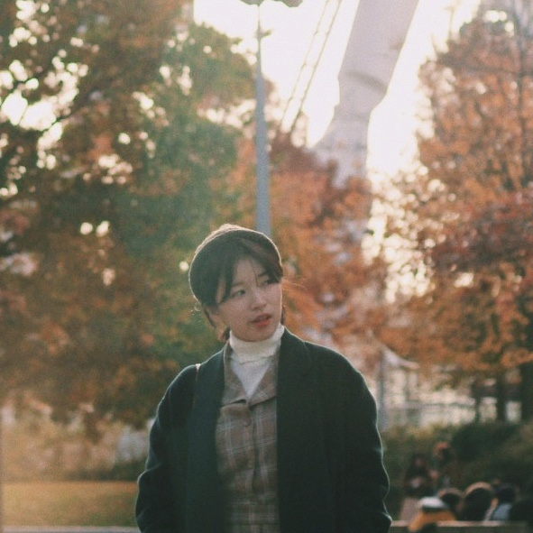

--------
Jiyoon Kim
#1995 #infp,enfp #Business administration #Taking film pictures #Frontend
Motto : Seize the day!
>TMI
1. 음악 듣는 걸 좋아합니다. 요즘 즐겨 듣는 음악은 조정희의 'Now And Forever'입니다.
2. 사진 찍어주는 걸 좋아합니다. 순간을 자연스럽게 담아내는 필름 사진을 좋아합니다.
3. 아직은 모르는 게 많지만, 느리더라도 꾸준히 성장하는 개발자가 되고 싶습니다.